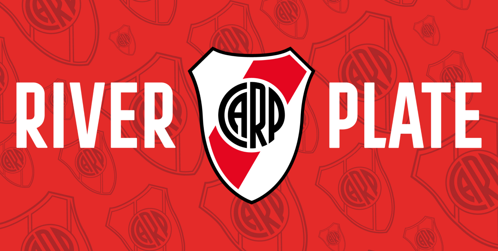

Mis Proyectos
Archivo Completo
Una colección detallada de mis trabajos en diseño de interfaz, experiencia de usuario y desarrollo frontend.

HealthTech
CareHub
Rediseño completo de billetera virtual.
Figma
Android

Music Player
YouTube Music
Rediseño de reproductor musical.
Figma
Rediseño

Web App
Pokédex
Panel de control analítico.
React
JSX
API

Web
River Plate
Sitio web conceptual del club con enfoque visual e identidad.
HTML
CSS
JS
Bootstrap

Campaña Visual
Tarot
Campaña visual basada en una portada, con sistema gráfico y adaptaciones.
Illustrator
Photoshop